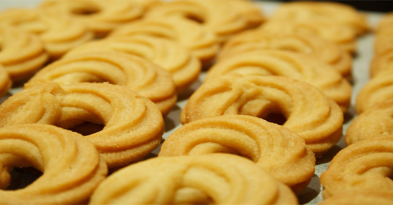
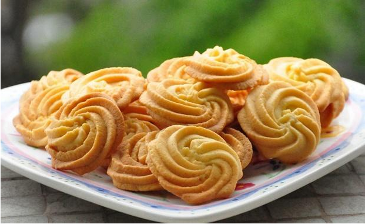

如何制作原味酥脆滴曲奇饼干
先了解我们需要的原材料吧！
黄油，糖粉，鸡蛋，低筋粉
还有一些需要的简单工具。
打蛋盆，手持打蛋器，软硅胶刮板，裱花袋，三能裱花嘴
| tips： | 1.黄油有分植物黄油和动物黄油两种，要选更天然的动物黄油哦。 而且要求软化到位。 2.鸡蛋最好用常温蛋哦。 3.加入低筋面粉之后只需要搅拌到面粉消失即可，不要过度搅拌。 |
|---|
制作步骤

| 1： | 需要少量打发黄油的时候只用手持打蛋器就好了，加入糖粉打发到略微颜色变化即可 |
|---|---|
| 2： | 鸡蛋在另一个容器中搅匀，分多次少量加入黄油中，使其更好地乳化进入 |
| 3： | 筛入低筋面粉，用切拌法混拌至面粉不见即可，不要过度搅拌 |
| 4： | 装入裱花袋中，在烘焙垫上挤出自己喜欢的形状。放入烤盘，根据自己挤出的形状设置烘烤时间。 |